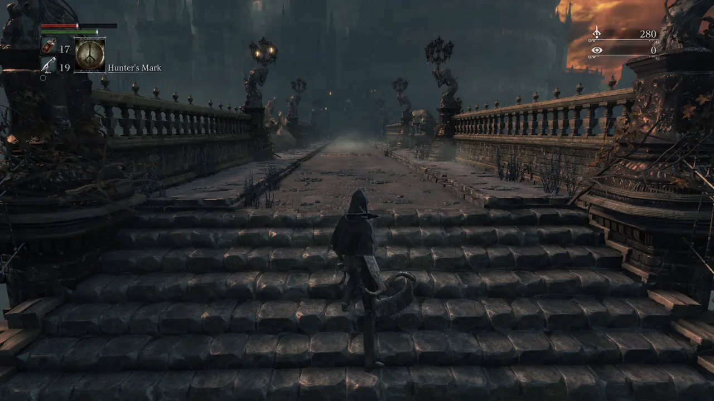
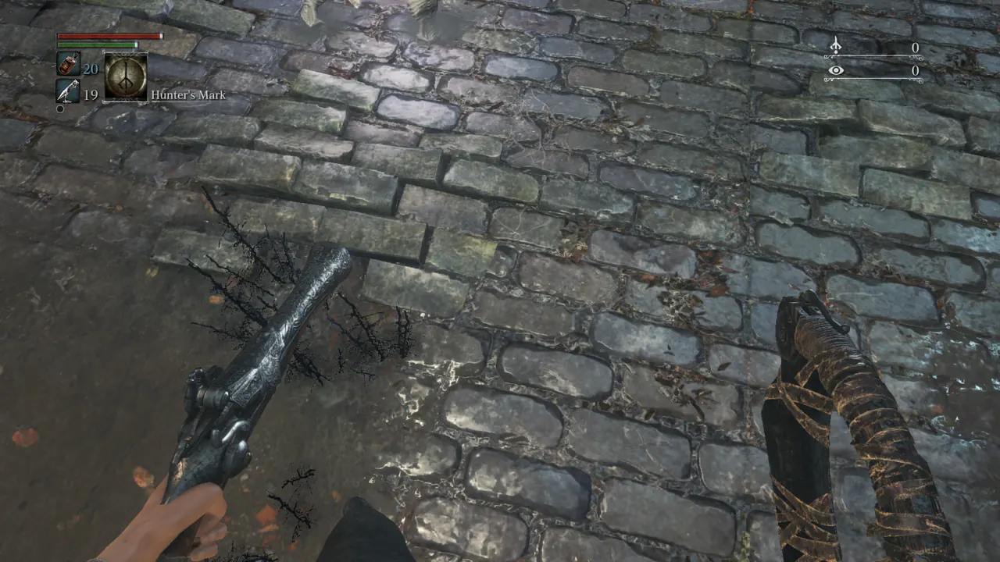
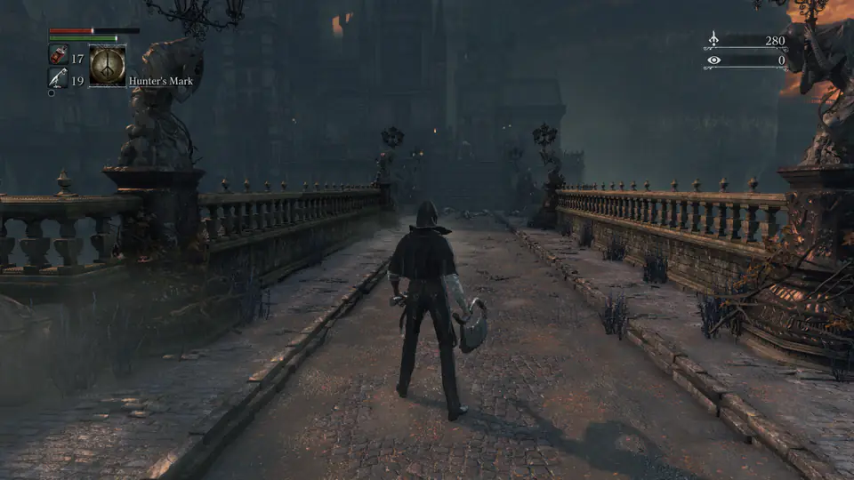
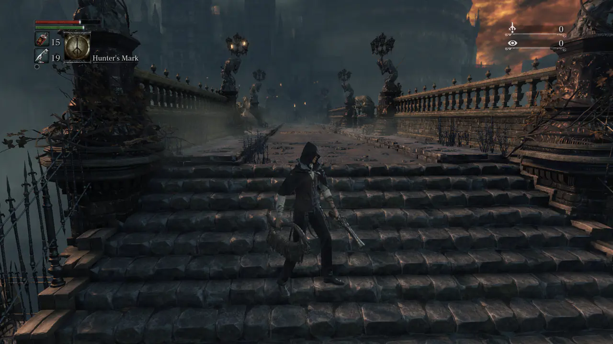
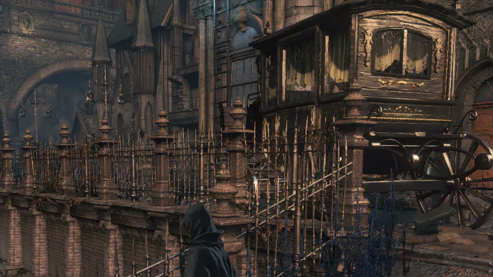

Bloodborne · PS5 Pro · onionHEN
Bloodborne on PS5, tuned
Image-quality and gameplay mods for Bloodborne on a jailbroken PS5 Pro: 60 FPS, no motion blur, no chromatic aberration, wide field of view, slightly sharper anti-aliasing, and an experimental first-person head camera. They are applied to the running game by the onionHEN cheat engine, so your game files are not rewritten.
- Game: Bloodborne GOTY, CUSA03173 v01.09
- Only tested setup: PS5 Pro, firmware 12.40
- License: GPL-3.0

Read this first
- All testing was done on firmware 12.40 with a PS5 Pro. Nothing else was tested.
- Behaviour and performance on a base PS5 (including Slim and Digital) and on other firmware are unknown. The 60 FPS patch in particular may behave differently there.
- Use at your own risk. Mods can crash the game, and a crash during an autosave can damage a save. Back up your save data first and play offline.
- You must own the game and run this only on a console you own. This project ships no game files and no game assets.
Details: compatibility and known issues. If you try it on a base PS5 or another firmware, please report what happened.
What is in the box
Twelve toggles in one cheat file. Four are on by default, the rest are opt-in, and every one can be switched on or off in the onionHEN cheat menu. Several effects are subtle on purpose, and the comparison tool shows them honestly, including the cases where we could not see a difference.
-
Default on
60 FPS
Unlocks 60 FPS by patching the frame-rate cap, the simulation time step and related constants. Based on Lance McDonald's Bloodborne 1.09 60 FPS patch, applied to the running game instead of rewriting
Credit: Lance McDonaldeboot.bin. -
Default on
No motion blur
Turns the motion-blur pass off for a cleaner image while the camera or the world moves.
-
Default on
No chromatic aberration
Removes the colour fringing toward the screen edges.
-
Default on
Skip intro logos
Blanks the start-up logo videos so the game reaches the menu sooner.
-
Default off
Wide FOV x1.3
Raises the vertical field of view from 43 to about 56 degrees (about 87 degrees horizontal at 16:9). The multiplier can be changed when you build the cheat file.
Compare normal and wide -
Default off
DLAA threshold 0.3
The game already runs its own DLAA anti-aliasing pass. This raises its edge threshold from 0.1 to 0.3 for a slightly crisper image while keeping anti-aliasing on. Subtle by design.
Compare anti-aliasing -
Default off
Anisotropic filtering 16x
Sets the engine's texture sampler to 16x anisotropy. Honest note: in our Yharnam test scenes we could not see or measure a difference, so treat it as harmless but unproven.
Check it yourself -
Default off
No depth of field
Turns the depth-of-field blur off, cutscenes included. The effect is small and mostly visible in far, foggy views such as the Hunter's Dream garden.
Compare depth of field -
Default offExperimental
FPS head camera
A first-person camera attached to the character's head bone. The game's own camera logic keeps running, camera collision pull-in is disabled, and it falls back to the normal camera if its safety checks fail. When the hunter dies the view follows the head to the ground (death camera) or stays on the enemy that killed the hunter, optionally with a GTA-style slow motion. Double-click the touchpad to switch it on and off in game; the field of view follows the camera mode. Toggle it off and on to reset it.
See an early prototype -
Default offExperimental
Head camera: body faces the view
Rotates the displayed body to follow the camera direction instead of the movement direction. Active only while the head camera is on (third person keeps the normal body); included in the fps profile. Known side effect: the coat and hood cloth disappears while it is on.
-
Default offExperimental
Head camera: aim at lock-on target
Keeps the first-person view pointed at the locked-on enemy. Needs the head camera. A first iteration: close-range strafing can still make the view twitch.
-
Default off
DLC save requirement unlock
Sets the DLC-ownership flags so that saves which require the DLC can be loaded. Use it only with content you own.
Default on and Default off describe the shipped cheat file. Ready-made profiles (default, quality, fps) in the repository only differ in which entries are enabled. Full descriptions: feature reference.
Install in 3 steps
Short version for a console that is already set up. The full guide has the requirements, profiles, troubleshooting and how to uninstall.
-
Check the setup
A jailbroken PS5 on firmware 12.40 that can run payloads, with the patched onionHEN from the repository loaded (required: it applies the cheats at launch and maps the code caves), and Bloodborne Game of the Year Edition,
CUSA03173version 01.09. Jailbreaking itself is out of scope here.Do not skip the notice above, and back up your save data.
-
Copy the cheat file
Copy
cheats/CUSA03173_01.09.jsonfrom the repository to/data/OnionHEN/cheats/CUSA03173_01.09.jsonon the console, for example over FTP. The file name must match exactly.Prefer a preset? Copy one of the profiles in
cheats/profiles/under that same name instead. -
Start the game and toggle
Start Bloodborne. The cheats marked enabled are applied at launch. Open the onionHEN cheat menu to switch the optional mods on or off, and switch the FPS head camera on or off with a double-click of the touchpad.
If the game crashes at launch, disable mods one by one, starting with the optional ones.
Compare it yourself
A small, dependency-free comparison tool: slider, blink A/B, difference view, strips and pixel zoom. It uses 1:1 crops of about 100 KB each and loads only the two images you are looking at, so it stays light on a phone. Nothing is loaded from other sites.
- Anti-aliasingGame default, DLAA threshold 0.3, plain FXAA and AA off on a fence and carriage wheel.
- Wide FOVNormal against x1.3, with a rejected x1.6 for reference.
- Depth of fieldA small visible gain in the foggy garden, and no difference in Yharnam.
- Anisotropic filteringAn honest negative result: try the difference view yourself.
Gallery
Screenshots from a PS5 Pro. The head camera is experimental and still has rough edges, see the known issues.
-
FPS head camera: the death effect. A fight in the Yharnam street. When HP reaches 0 the view stays on the enemy that killed the hunter (the killer camera), the YOU DIED screen arrives with the normal death animation, and from that moment every character drops to 5 % speed so the enemy moves in slow motion over the body. 9 seconds, no sound. -
FPS head camera: the jump and the death camera. Recorded on a PS5 Pro with the fpsprofile: head bobbing, the body turned to the view, and a jump from the rooftop. When the hunter dies the view follows the head down the wall and ends on the death screen. 12 seconds, no sound. -
FPS head camera: the sickroom run. From the sickroom, past a beast and out into Yharnam; the view looks back while the hunter backs down the stairs and ends, unplanned, on the death screen. 35 seconds, no sound. -
FPS head camera: the first fight. Walking into the Yharnam street, the first enemy coming out from behind the crates, and the lock-on aim keeping the view on it. 14 seconds, no sound. -
FPS head camera: the axeman and the death camera. A large axe-wielding enemy comes down the Yharnam street with a second one chasing. When the hunter is struck down the view follows the head to the ground and ends on the death screen. 13 seconds, no sound. -

FPS head camera (experimental). The view from the character's head, with both weapons in hand. -

Camera toggle (early prototype). Normal chase camera and first-person view from the same spot. The current build follows the head bone instead. -

Wide FOV x1.3. More of the scene fits on screen. See it side by side in the comparison tool. -

DLAA threshold 0.3. A 1:1 crop of the game's native 1080p image. The difference to the default is subtle, so the tool lets you blink and zoom.
Documentation
Everything lives in the repository. These links open the files on GitHub.
- READMEOverview of the repository.
- Install guideRequirements, the three steps, profiles, uninstalling, troubleshooting.
- Feature referenceHow every mod works and what was measured.
- Known issuesLimits, crashes to avoid, head camera rough edges.
- CompatibilityThe one tested setup and what is unknown.
- Research notesReverse-engineering notes, hooks and code caves.
- CreditsThe full list of people and projects this builds on.
- Agent notesGuidance for AI coding agents and contributors.
Credits
This project stands on the shoulders of the PS5 homebrew and reverse-engineering community. If an attribution is missing or wrong, please open an issue or a pull request.
Lance McDonald: the 60 FPS patch
The 60 FPS mod is based on the work of Lance McDonald, who reverse-engineered and published the Bloodborne 1.09 60 FPS patch. The list of memory locations and byte values behind the 60 FPS cheat entry was derived from his patch and translated into an onionHEN cheat that is applied to the running game. All credit for finding which instructions control the frame-rate cap, the simulation time step and the related constants belongs to him.
This repository does not contain his executables. Please support the original author.
- PS4-PS5-Game-Patch and libhijacker-game-patch by illusionyy and contributors: the community patch lists the motion-blur, chromatic-aberration, intro-skip, DLC and 60 FPS write lists were checked against.
- onionHEN by aydencharles and contributors: the cheat engine, Toolbox and in-game overlay these mods run on.
- etaHEN by LightningMods and contributors: the source base of the onionHEN tree.
- GoldHEN by SiSTR0 and contributors: the PS4 all-in-one HEN that onionHEN takes after.
- kstuff-lite by EchoStretch, sleirsgoevy and contributors: kernel patches used in the payload chain.
- PS5 Payload SDK and elfldr by the ps5-payload-dev team: the toolchain and the first-hop ELF loader.
- libhijacker by astrelsky and NineS by buzzer-re: process hijacking and ShellUI injection used inside onionHEN.
- HEN-Cheats-Collection by TeeKay87 and PHU Games Tools by ArkSama: the community cheat format and the FPS counter onionHEN references.
- PS5 WebKit Autoloader and PKG-Manager by itsPLK: the autoloader and package installer used on the development console.
- ftpsrv, ShadowMount+ and nanoDNS by drakmor and contributors.
- cJSON (Dave Gamble), miniz (Rich Geldreich) and the 7-Zip LZMA SDK (Igor Pavlov), embedded in onionHEN. Capstone, NumPy, Pillow and imagecodecs (Christoph Gohlke), ImageMagick and more are listed in the full credits.
- Claude (Anthropic), through Claude Code, helped with the analysis, tools and documentation. All findings were verified on real hardware.
Complete list, with every project and library: CREDITS.md.